802.11ac学习笔记
802.11ac介绍
802.11ac was founded as gigabit at less than 6 GHz, keeps it constrained to the existing unlicensed frequency bands used by 802.11.
802.11ac is an evolution from 802.11n and not a revolutionary departure.
与802.11n对比
| 802.11n | 802.11ac |
|---|---|
| Supports 20 and 40 MHz channels | Adds 80 and 160 MHz channels |
| Supports 2.4 GHz and 5 GHz frequency bands | Supports 5 GHz only |
| Supports BPSK, QPSK, 16-QAM, and 64-QAM | Adds 256-QAM |
| Supports many types of explicit beamforming | Supports only null data packet (NDP) explicit beamforming |
| Supports up to four spatial streams | Supports up to eight spatial streams (AP); client devices up to four spatial streams |
| Supports single-user transmission only | Adds multi-user transmission |
| Includes significant MAC enhancements (A-MSDU, A-MPDU) | Supports similar MAC enhancements, with extensions to accommodate high data rates |
发展趋势
| Attribute | First wave | Second wave |
|---|---|---|
| Maximum number of spatial streams | 3 | 3 or 4 |
| Channel width | 80 MHz | 160 MHz |
| Maximum modulation | 256-QAM | 256-QAM |
| Typical maximum speed | 1.3 Gbps | 2.6 Gbps |
| Beamforming support | Varies (depending on vendor) | Yes |
| MU-MIMO support | No | Possibly |
物理层
相对于802.11n引入时，传输技术有创新性的变化，802.11ac在这方面并没有 带入创新性的技术，数据传输仍然依赖于：
- MIMO
- Wide Channels
所以，802.11ac物理层面上的传输速率的提升主要来源三个方面：
- 更多数量的MIMO流
- 更宽的Channel
- 更精密的调制技术，可以在单位时间内携带更多的数据。
MIMO扩展操作
802.11ac为了提升数据吞吐量，将MIMO空中流支持的个数从4提升到8个。
另外，就是支持 MU-MIMO ，将速率进一步提升。
每个空中流需要有自己的传输系统 。 所以构建一个支持8个空中流的AP需要 配置一个天线阵列：拥有8个独立的无线链(radio chain)和天线。
扩展到8个空中流，对吞吐量的提升就相当于增加了一条高速公路的车道数。
NOTES: The number of spatial streams can be no greater than the number of elements in the antenna array. When the count of array elements exceeds the number of spatial streams, there is an additional signal processing gain that can be used to improve the signal-to-noise ratio in beamforming.
By using the antenna array to send carefully phase-shifted energy patterns, it is possible to “steer” a data stream toward a particular receiver.
Radio Channels in 802.11ac
802.11ac引入了两个新的频宽（80MHz和160MHz）。 802.11ac将信道分成许 多OFDM子载波，每个的频宽是312.5 kHz。 每个子载波用于单独的传输， OFDM将进来的数据分配到这些子载波中去携带。另外有一些子载波保留，被称为 / 测量载波/ ，它们通常不携带用户数据，而是用于测量信道。
Radio Channel Layout
11ac增加了80MHz的信道带宽以及160MHz的信道带宽，其中160MHz的带宽可以由两个 不连续的80MHz的带宽组成。
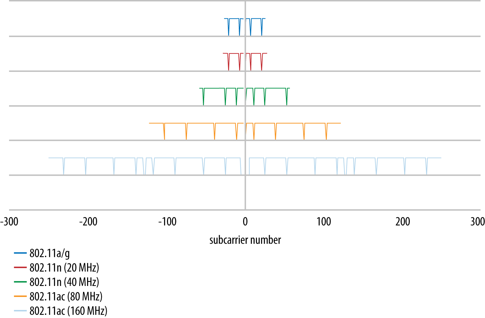
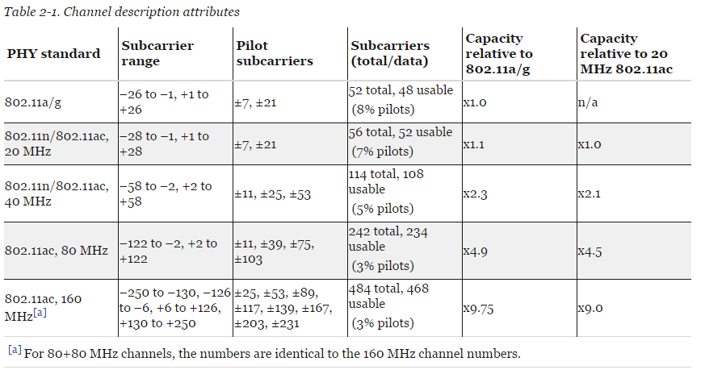
Radio channel spectral mask
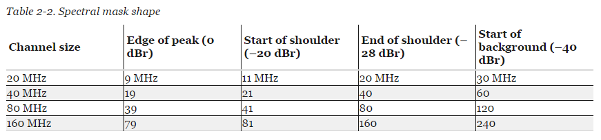
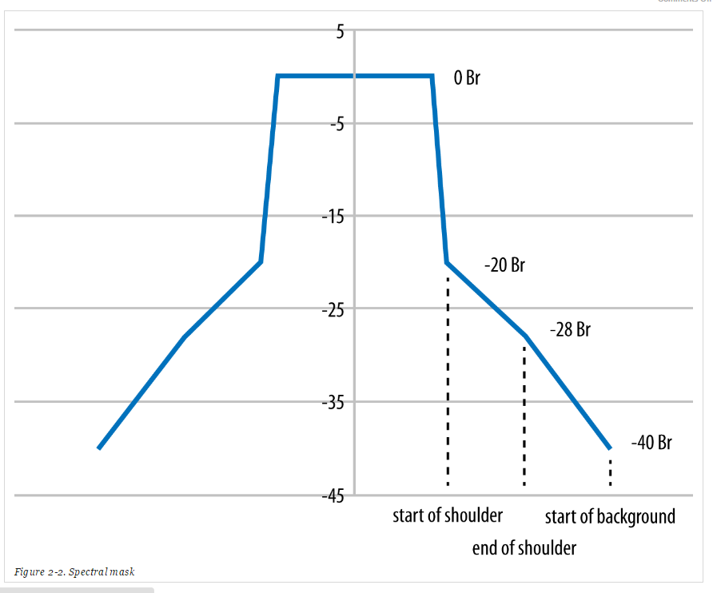
Available Channel Map
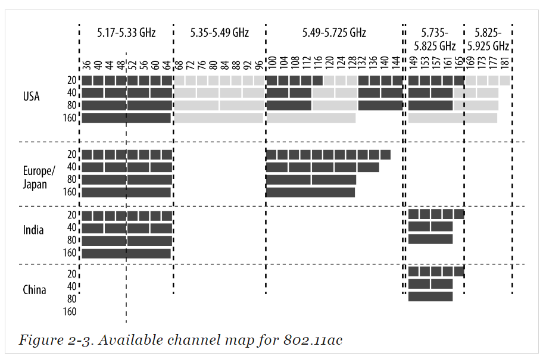
Transmission: Modulation, Coding, and Guard Interval
11ac优化了调制与编码，去除了一些很少实现的非平等的调制选项。
Modulation and Coding Set (MCS)
11ac中，选择一个MCS相对简单多了。 因为Spec只定义了10种不同的MCS可 供选择，而不像11n那样有多达70多个选择。
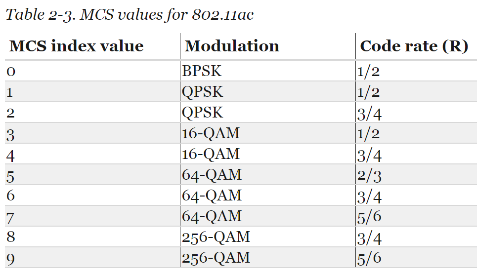
其中前7个是必须支持的。 因为大部分厂商也支持256-QAM， 所以市场上的 11ac网卡大都支持所有9种MCS。
In 802.11ac, modulation and coding are coupled together into a single number, the MCS index. Each of the MCS values can lead to a wide range of speeds depending on the channel width, the number of spatial streams, and the guard interval.
One of the ways that 802.11ac simplifies the selection of modulation and coding is that the modulation and coding are no longer tied to the channel width, as they were in 802.11n. 要了解 一个链路的速率，需要结合MCS索引号，以及信道带宽来得到一个总体的速 率。
256-QAM modulation
256-QAM使用16(phase shifts) X 16(amplitude levels)的星座图。 它的 星座图点分布更密， 对精准度要求更高。 通过发送方要求的目标点与实际 解析出来的目标点之间有偏差，做不到完全重合。 目标点与实际点在星座 图中的一些直接距离称为error vector magnitude (EVM)。
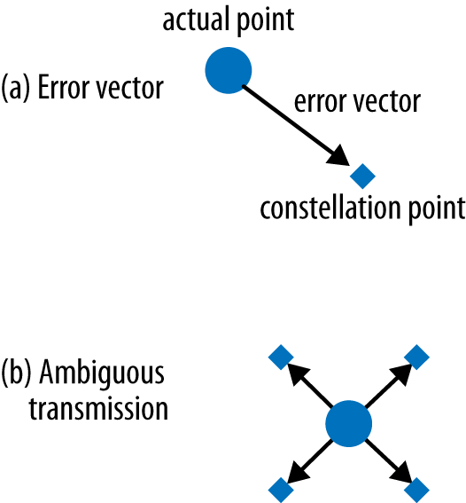
Guard Interval
the guard interval shrinks from 800 ns to 400 ns, providing about a 10% boost in throughput.
MAC层
Framing
11ac帧的格式大部分与11n的相同，主要有两个大的变化：
- 最大帧大小由8,000 bytes改为超过11,000 bytes,进一步提升了聚合来 自上层的帧的能力。
- 复用11n中的HT Control域。 定义了一种新的Control域的形式。 当HT
Control域起始位为0，则与11n相同， HT Control域就是HT相关的类型。
当HT Control域起始位为1， 则HT Control域就是VHT相关的类型。
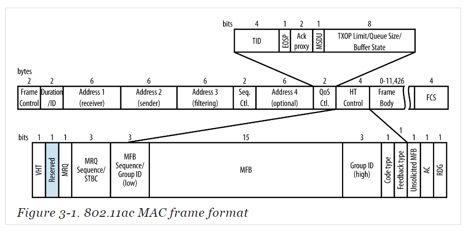
Frame Size and Aggregation
All 802.11ac data frames are sent in an A-MPDU, even if the A-MPDU has only one frame in it.
Management Frames
11ac在管理帧中增加了VHT Capabilities IE。 它们出现在Probe Request 和Probe Response中。
The VHT Capabilities Information element
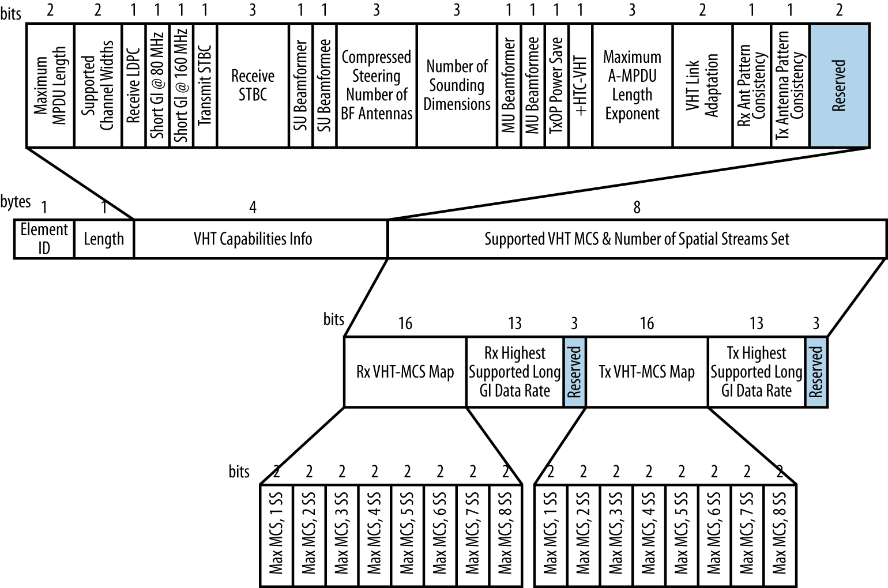
The VHT Operation Information element
The VHT Operation IE describes the channel information and the basic rates supported by the transmitter.
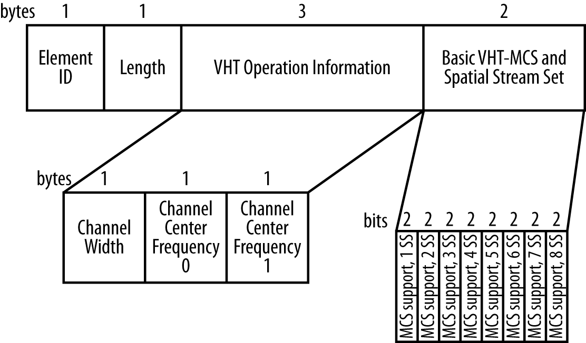
Medium Access Procedures
To make the most efficient use of spectrum, 802.11ac also adds new rules for allowing devices to indicate their intended bandwidth consumption in RTS/CTS exchanges.
Clear-Channel Assessment (CCA)
An important component of the 802.11ac standard is the way that a BSSID can switch channel bandwidth dynamically on a frame-by-frame basis.
To help with dividing up airtime between channels, 802.11ac introduces the terminology of primary and secondary (or, more formally, non-primary) channels.
NOTES: RIFS is not used by 802.11ac.
Basic channel access rules
The most basic channel access rule is that a frame can be transmitted if the medium is idle. 如何判定当前信道空闲则与使用多 大带宽有关：
- Transmit a 20 MHz frame on its primary 20 MHz channel. Clear-channel assessment looks only at the primary 20 MHz channel.
- Transmit a 40 MHz frame on its primary 40 MHz channel. Naturally, this requires that the secondary 20 MHz channel is also idle and has passed the CCA check.
- Transmit an 80 MHz frame on its primary 80 MHz channel. As you might expect at this point, this requires that both the primary 40 MHz channel and the secondary 40 MHz channel are idle.
- Transmit a 160 MHz frame on the 160 MHz channel, but only if both the primary and secondary 80 MHz channels are idle.
Sensitivity requirements
To report that the channel is busy, 802.11 has two methods: signal detection and energy detection.
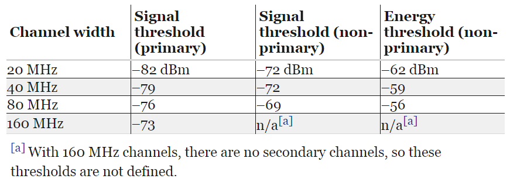
Mandatory MAC Features
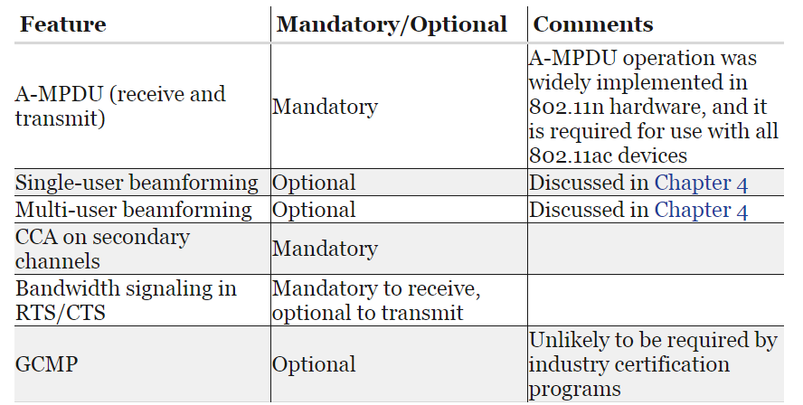
Beamforming
Beamforming Basics
传统路由器使用的是全向天线，在各个方向发射的信号能量是相同的。 这 种AP的天线信号覆盖范围看起来就是以AP为原点的一个圆形区域。 这种天 线便宜，更重要的是，它是往每个方向发射无线电波信号，AP不需要跟踪每 个连接到自己的Client。 只要Client位于AP的信号覆盖范围内，AP发出来 的信号它一定能够收到。当然，这样导致的结果就是在每个方向上，信道都 是处于忙碌状态。
另一种传输信号的方式就是集中能量于某个接收者的方向，该过程称之为
beamforming 。 如果AP采用这种方式往某一个方向进行传输，那信号可
传输的距离就会更远。 示意图如下所示：
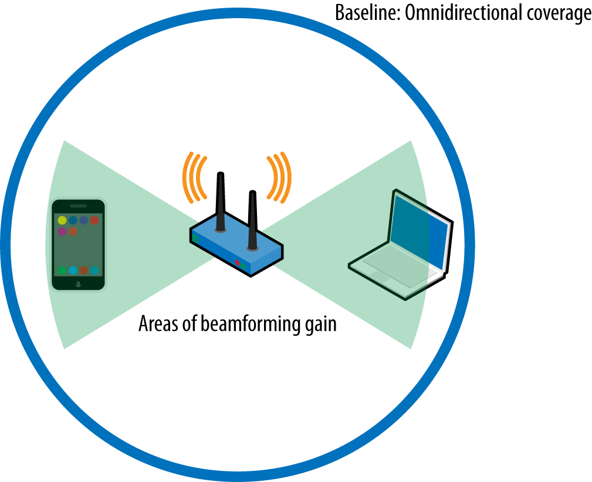
Beamforming主要增加的是中距离的无线网络性能。 短距离本身信号强度足 够大，能达到最大速率。长距离则跟全向天线的性能差不多。
随着远离AP方向的距离增大，WiFi的数据传输速率会相应降低，使用了 Beamforming技术的相对来讲，同样的距离，可以使用更高的速率。
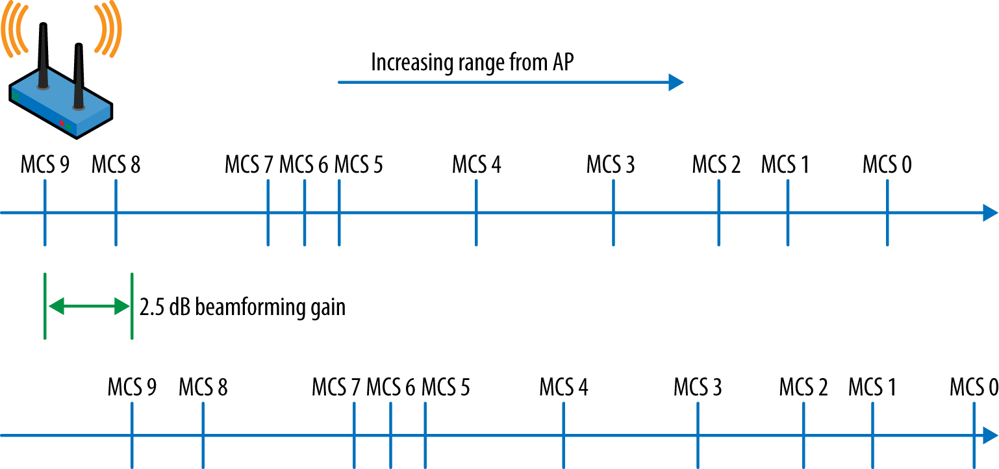
Beamforming uses antenna arrays to dynamically alter the transmission pattern of the AP, and the transmission pattern can be changed on a per-frame basis.
广播包会使用传统的全向传输方式发送。
Any device that shapes its transmitted frames is called a beamformer, and a receiver of such frames is called a beamformee. Beamforming的过程如下图所示：
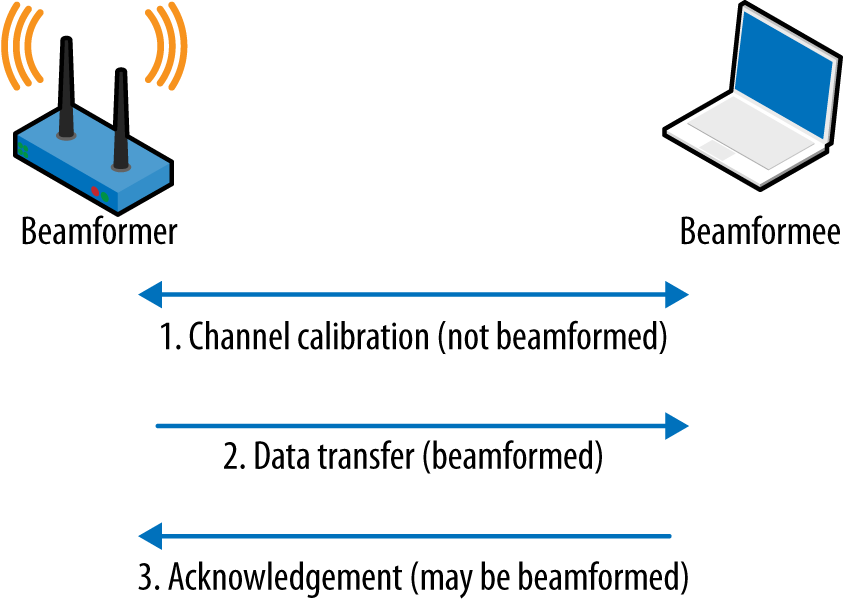
首先交换一帧数据来量测信道，从而得到 steering matrix 。 这个矩阵
描述了如何将能量定向传输到接收方。
Beamforming gains are expected to be approximately 3 dB in the transmitted direction. In practice, this gain will typically be one step up in data rates (increasing one MCS number) for a mid-range transmission.
Null Data Packet (NDP) Beamforming in 802.11ac
In the 802.11n specification, multiple beamforming methods were
described. Before using beamforming, both sides of the link had to
agree on one method they shared, but due to the complexity of
implementing multiple methods, many product vendors chose not to
implement any. To avoid a repeat with 802.11ac, engineers writing
the specification settled on just one method of beamforming,
called null data packet (NDP) sounding.
Beamforming gains are expected to be approximately 3 dB in the transmitted direction. In practice, this gain will typically be one step up in data rates (increasing one MCS number) for a mid-range transmission.
Channel measurement (sounding) procedures
Channel sounding consists of three major steps:
- The beamformer begins the process by transmitting a Null Data Packet Announcement frame, which is used to gain control of the channel and identify beamformees. Beamformees will respond to the NDP Announcement, while all other stations will simply defer channel access until the sounding sequence is complete.
- The beamformer follows the NDP Announcement with a null data packet. The value of an NDP is that the receiver can analyze the OFDM training fields to calculate the channel response, and therefore the steering matrix. For multi-user transmissions, multiple NDPs may be transmitted.
- The beamformee analyzes the training fields in the received NDP and calculates a feedback matrix. The feedback matrix, referred to by the letter V in the 802.11ac specification, enables the beamformer to calculate the steering matrix.
- The beamformer receives the feedback matrix and calculates the steering matrix to direct transmissions toward the beamformee.
With the steering matrix in hand, the beamformer can then transmit frames biased in a particular direction, 如下图所示：
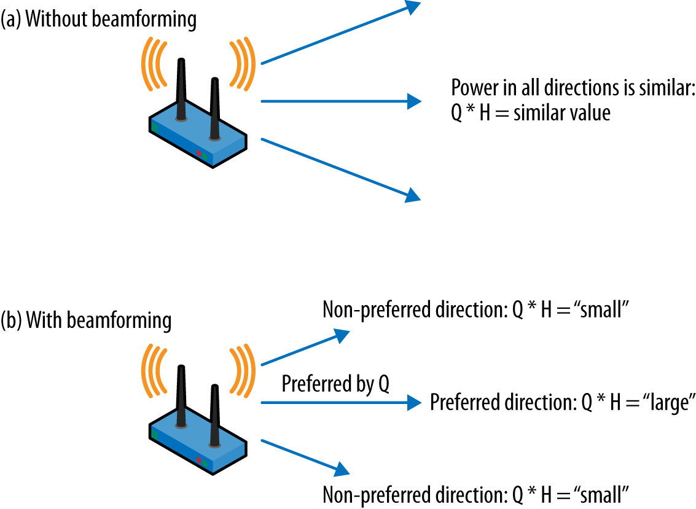
当使用Beamforming的时候，Beamformer可以偏向某个方向传输数据。 如果 不使用Beamforming，则每个方向使用的能量都是相同的。
然而，Sounding的过程也是需要耗费时间的。 如果通过Beamforming获得的 时间上的节省不足以抵销Sounding过程的时间消耗，则总体速率就会降低， 体现不了Beamforming的优势。通常情况下，一次Sounding的交互过程大概 需要500ms。
当Beamformee收到Beamformer发送过来的NDP时，Beamformee会计算出 feedback matrix并返回给Beamformer。
Single-User (SU) Beamforming
Single-user beamforming is readily understandable because its purpose is to shape a transmission from a single transmitter to a single receiver.
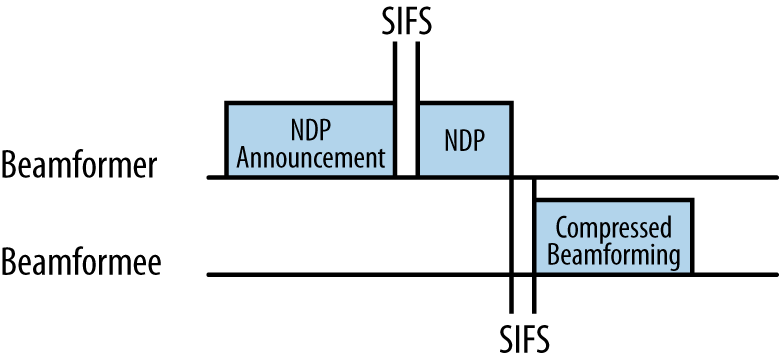
the beamformer sends a null data packet, which is a frame with a
known fixed format. By analyzing the received NDP frame, the
beamformee calculates a feedback matrix that is sent in a reply
frame. Beamformees do not send a steering matrix directly because
the beamforming sounding protocol needs to enable multiple-user
MIMO.
Channel Calibration for Single-User Beamforming
The channel calibration procedure is carried out as a single operation, in which the beamformer and beamformee cooperatively measure the channel to provide the raw data needed to calculate the steering matrix. The sounding procedure does not transmit the steering matrix directly, but instead works to exchange all the information necessary for the beamformer to calculate its own steering matrix.
NDP Announcement frame
The channel sounding process begins when the beamformer transmits a Null Data Packet Announcement frame, which is a control frame.
The main purpose of the NDP Announcement frame is to carry a single STA Info field for the intended beamformee.
NDP Frame
当Beamformer传输完NDP Announcement frame后，紧接着会传输Null Data Packet frame。 只包含PLCP头部信息，不包含MAC数据。
VHT Compressed Beamforming Action frame
当Beamformee收到NDP后， 会回应一个feedback matrix。 feedback matrix相关的信息包含在这个Action帧中。
Multi-User (MU) Beamforming
Just as Ethernet switches reduced the scope for collisions from a large network down to a single port, multi-user MIMO reduces the spatial collision domain. By using MU-MIMO, an AP may transmit to multiple receiving stations simultaneously.
NOTES: Due to the need for sophisticated antenna systems and signal processing, MU-MIMO in 802.11ac can be used only in the downstream direction, from an AP to multiple client devices.
With 802.11ac’s multi-user MIMO, a single transmission time can be used to send frames to multiple single-stream receivers. The 802.11ac standard allows up to four different receiver groups within one MU-MIMO transmission.
NOTES: Multi-user MIMO can transmit simultaneously to multiple single-stream devices, which enables the network to more efficiently serve increasingly common battery-powered devices such as phones and tablets.
Channel Calibration for Multi-User Beamforming
To support multi-user MIMO beamforming, 802.11ac uses an extended version of the channel sounding exchange. the multi-user channel sounding procedure requires a response from all beamformees. Each beamformee contributes information in a feedback matrix, and the beamformer uses multiple feedback matrices to produce one steering matrix.
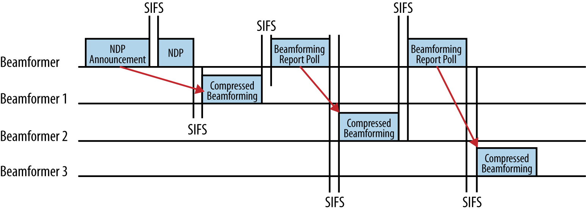
the sounding procedure starts off exactly as it did in the
single-user case, with an NDP Announcement and NDP that put the
transmission out to begin the calibration. However, to retrieve
the feedback matrix from each beamformee, the multi-user sounding
procedure needs a new frame, the Beamforming Report Poll frame,
to ensure that responses from all beamformees are collected.
上图显示了有三个beamformee， the beamformer must use two poll frames to obtain the feedback matrices from the second and third beamformees. (No poll frame is required for the first station named in the NDP Announcement frame, but the second and subsequent beamformees must be polled.) After receiving multiple responses, the beamformer will integrate all the responses together into a master steering matrix.